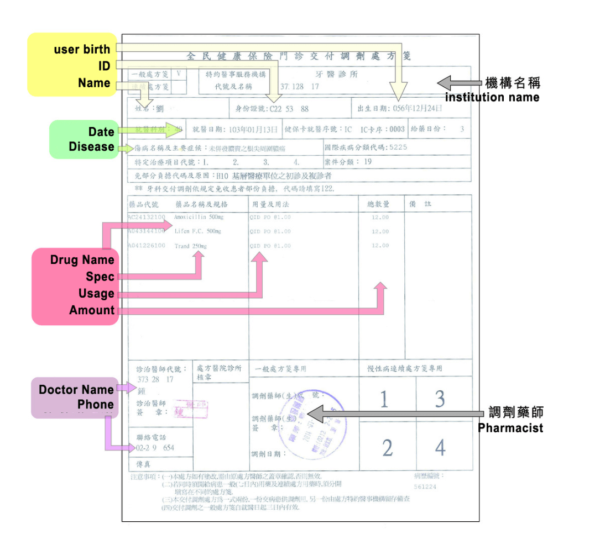

Prescription Helper
Efficiency and Friendly in Medical industry
The project was 3 years ago since I really started being a UX designer. In the beginning, there are only 4 employees to build up an e-commerce platform. Even it is not the perfect design and system, but I still proud of my first full-time design role. And there I will focus on the prescription part of the medical e-commerce platform.
In Taiwan, while older people hold on the prescription is usually take a long process to get the drug. It is a chance to get more acquisition of orders.
My role: Product Designer
Work Process
- Research
Industry study, stackholder interview
- Design
Information artecture, flow, wireframe
- Validation
Prototype, Usability test
Research
Continuous prescription for chronic diseases
Continuous prescription, usually, people can take drugs for 3 months, maximum receive 4 times. Beside first time, the second, third and fourth user can go to other clinic or hospital to receive the drugs.
Find problems
For the prescription issue, there are 3 main problems base on the interview with some pharmacists and users.
- People took drug of prescription average time is 5hr in process.
- 86.5% of people return to original hospital to take drugs.
- There are 6500 of people lost prescription per month.
Every time is a long journey, some people don’t know or don’t trust the quality local clinic.
Interview with doctors and pharmacists
We have interviews with some doctors and pharmacists and get some feedback to design the order flow and upload prescriptions in prescriptions helper.
Through our research, we found there are not only older people but also lot of children and grandchildren usually help to own prescription to get medicine for their family needs, we try to combine more convenient tool such as e-prescription via QR-code to reduce massive upload time.
Employee in pharmacy are trying to accomplish the same things: fill prescriptions accurately and efficiently, provide high-quality patient care, and maintain a sustainable business model in which employees have good job satisfaction and customers are happy. In reality, most pharmacies operate under a model where employees spend most of their time addressing insurance issues, physician callbacks, and urgent requests. Adding more patient care services, although important, increases the workload without adding revenue. The tendency for chaos to erupt can be mitigated, however, with an improved work flow.
Solution
- Integrate prescription flow as an order between pharmacies and suppliers.
- Highlight the knowledge and quality of pharmacy.
- Save their prescription on the cloud.
Design
Optimise the pharmacys workflow, medical shippingment and backend system, save the users time of process, increase traffic for the pharmacy.
Wireframe
Once the idea and rules of prescription confirmed, I started to draft order flow to make sure all information and access points of each stage for users, platform, suppliers and pharmacies.
This is where I do most of my critical thinking about what the user needs, and design a detailed oriented user experience. My goal is to solve all the problems before I start any visual design.

Visual Design
Instead of using heavy text for an overview (this is *not* the description), we use colors, fonts, and icons. And we could only fetch some representative signal for that information.

Validation
Result
- QR-code upload to save time and decrease typo rate.
- Orders increase 300% in first 3 months.
- People no need take paper prescription to clinics.